近来在研究跟踪，跟踪的方法其实有很多，如粒子滤波（pf）、meanshift跟踪，以及KLT跟踪或叫Lucas光流法，这些方法各自有各自的有点，对于粒子滤波而言，它能够比较好的在全局搜索到最优解，但其求解速度相对较慢，由于其是基于颜色直方图的计算，所以对相同颜色东西不太能够区别，meanshift方法很容易陷入局部最优，但速度还是挺快，所以现在很有一些人是将meanshift跟pf结合做跟踪，恰好在很多方面能够互补。
Kanade-Lucas-Tomasi方法，在跟踪方面表现的也不错，尤其在实时计算速度上，用它来得到的，是很多点的轨迹“trajectory”，并且还有一些发生了漂移的点，所以，得到跟踪点之后要进行一些后期的处理，说到Kanade-Lucas-Tomasi方法，首先要追溯到Kanade-Lucas两人在上世纪80年代发表的paper：An Iterative Image Registration Technique with an Application to Stereo Vision，这里讲的是一种图像点定位的方法，即图像的局部匹配，将图像匹配问题，从传统的滑动窗口搜索方法变为一个求解偏移量d的过程，后来Jianbo Shi和Carlo Tomasi两人发表了一篇CVPR(94')的文章Good Features To Track，这篇文章，主要就是讲，在求解d的过程中，哪些情况下可以保证一定能够得到d的解，这些情况的点有什么特点（后来会发现，很多时候都是寻找的角点）。
PS: 其实我很奇怪这个算法为什么叫做KLT算法，而不加上Jianbo Shi的名字~
好吧，前戏就这么多，接下来进入正题，KLT是如何实现跟踪的？
先说KLT算法的几个前提假设：
1）亮度恒定
2）时间连续或者是运动是“小运动”
3）空间一致，临近点有相似运动，保持相邻
这几个为什么要这么假设，我在后面来解释，很直观的讲，如果判断一个视频的相邻两帧I、J在某局部窗口w上是一样的，则在窗口w内有：I(x, y, t) = J(x', y', t+τ)，亮度恒定的假设(假设1)即为了保证其等号成立不受亮度的影响，假设2是为了保证KLT能够找到点，假设3则为以下原因假设（即对于同一个窗口中，所有点的偏移量都相等）：
在窗口w上，所有(x, y)都往一个方向移动了(dx, dy)，从而得到(x', y')，即t时刻的(x, y)点在t+τ时刻为(x+dx, y+dy)，所以寻求匹配的问题可化为对以下的式子寻求最小值，或叫做最小化以下式子：
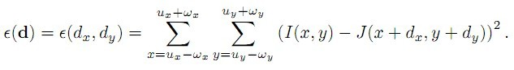
用积分来表示上述式子，以上式子可等效为：
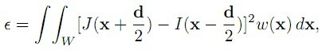
这个式子的含义，即找到两副图像中，在W窗口中，I、J的差异，其中I以x-d/2为中心，J以x+d/2为中心，w/2为半径的一个矩形窗口间的差异，好吧，结合我们微积分的知识，函数ε(d)要取得最小值，这个极值点的导数一定为0，即
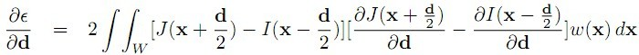
的值为0，由泰勒展开的性质：
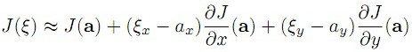
可以得到：
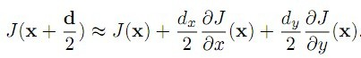
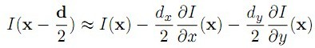
于是，问题转化为：
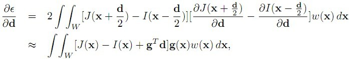
其中：
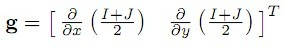
从而，问题即为：
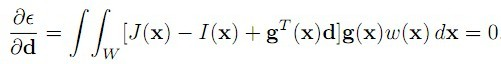=>
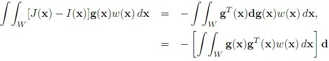
即其等式可看作为：
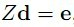其中，Z为一个2*2的矩阵，e为一个2*1的向量，
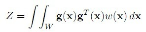
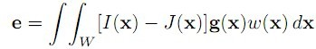
为了要使d能够得到解，则Z需要满足条件，即Z*Z'矩阵可逆，其中Z'为Z矩阵的转置(ZT)，在一般情况下，角点具有这样的特点。
在OpenCV里面，找角点的函数可用
void cvGoodFeaturesToTrack(
const CvArr* image
CvArr* eigImage, CvArr* tempImage
CvPoint2D32f* corners
int* cornerCount
double qualityLevel
double minDistance
const CvArr* mask=NULL
int blockSize=3
int useHarris=0 //一般采用Harris角点
double k=0.04 );
然后可以通过函数cvCalcOpticalFlowPyrLK进行跟踪（好像OpenCV里面调用LK的函数不止这一个，这个是金字塔计算）：
void cvCalcOpticalFlowPyrLK(
const CvArr* prev,
const CvArr* curr,
CvArr* prevPyr,
CvArr* currPyr,
const CvPoint2D32f* prevFeatures,
CvPoint2D32f* currFeatures,
int count,
CvSize winSize,
int level,
char* status,
float* track error,
CvTermCriteria criteria,
int flags );
OK，KLT算法的原理基本就这样，其实其跟踪效果并非太准，后来有很多提出的校正的方法，其中我目前看到比较实用的就是TLD算法的作者Zdenek Kalal在他2010年ICPR上的文章Forward-Backward Error: Automatic Detection of Tracking Failures提出的方法。